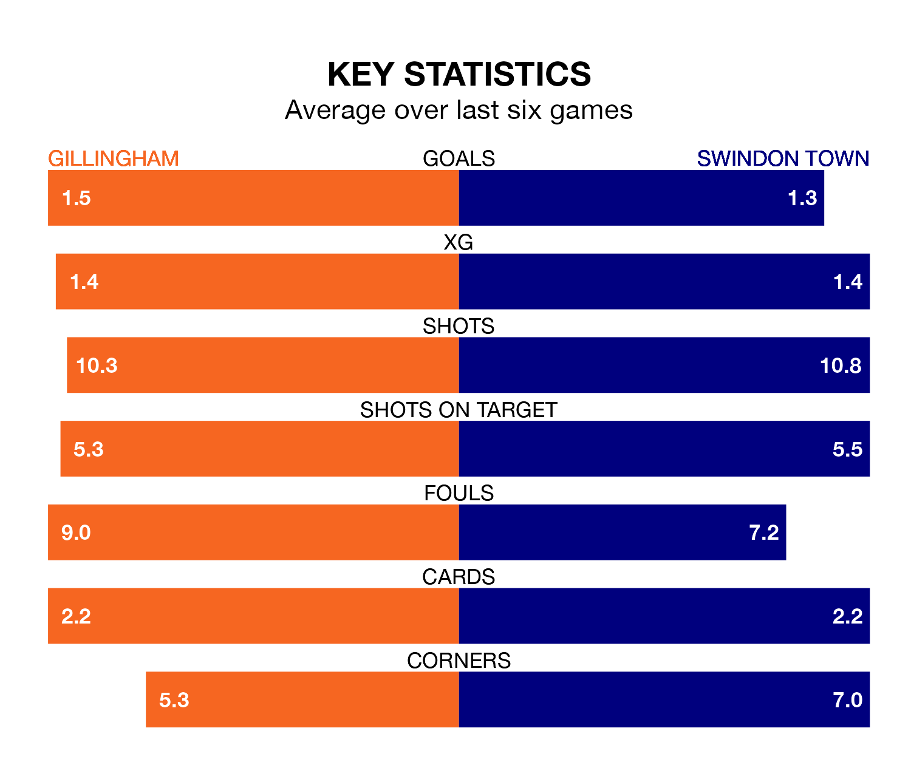

Gillingham host Swindon Town on Tuesday at the MEMS Priestfield Stadium in EFL League Two.
In their last league match, on Friday, Gillingham beat Notts County 3-1 away, with goals from Conor Masterson, Max Clark and Oliver Hawkins.
Swindon drew, 1-1 at home against Salford City on Saturday, with George McEachran scoring their goals.
With 29 goals in 30 games so far this season, Gillingham are the league's lowest scorers with 1.0 goals per game. But they are conceding fewer than average too, letting in 36 goals at a rate of 1.2 per game.
Swindon, meanwhile, are above average scorers, with 1.7 goals per game, compared to a league average of 1.5. They have conceded 1.8 goals per game.
In the last 10 years, Gillingham and Swindon have played each other on 11 occasions. Gillingham won five of them, Swindon one, and they drew five times.
On average, the Gills scored 1.7 goals and the Robins 1.0 in those matches.
Their last meeting was on October 24, when Gillingham won 1-0 away.
In Jake Turner, the Gills can rely on one of the league's safest pair of hands. He has kept 10 clean sheets in his 30 appearances this season, and only two other 'keepers – Mansfield Town's Christy Pym and AFC Wimbledon's Alex Bass – have been able to prevent the opposition scoring on more occasions in EFL League Two.
In Town's net, Murphy Mahoney has four clean sheets in 23 games. He has conceded a goal every 57 minutes, 30% more often than the 75 minutes between goals for Turner.
The hosts are in reasonable form in EFL League Two, with three wins and two draws from their last six games.
With a win and two draws over that period, the Robins' form is much worse – they have taken five points from 18, compared to Gillingham's 11.
The away side are 17th in the table after 31 games, of which they have won 10 and drawn eight, earning 38 points.
Gillingham are eight places ahead of Swindon in ninth, with 14 wins and four draws putting them on 46 points.
Updated: 13:30 (UTC), 12/02/24